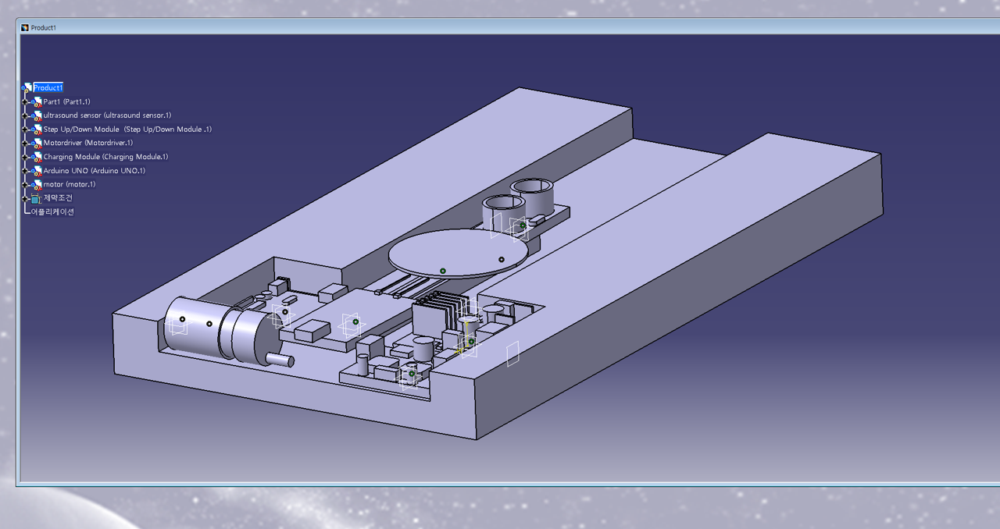
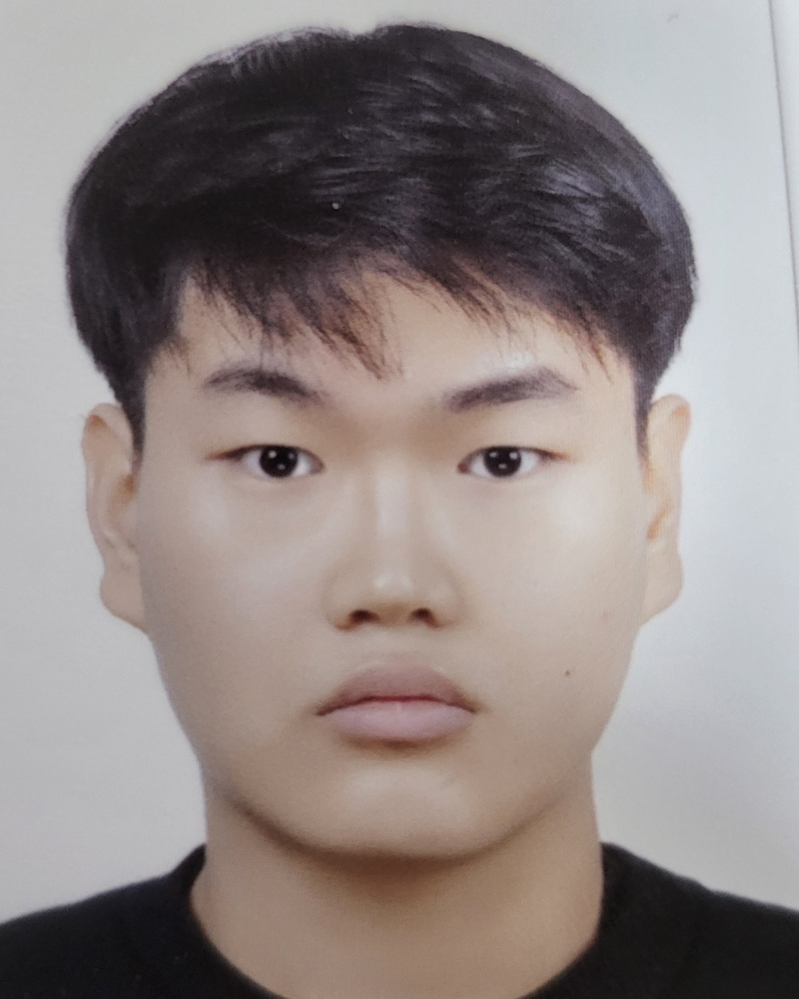
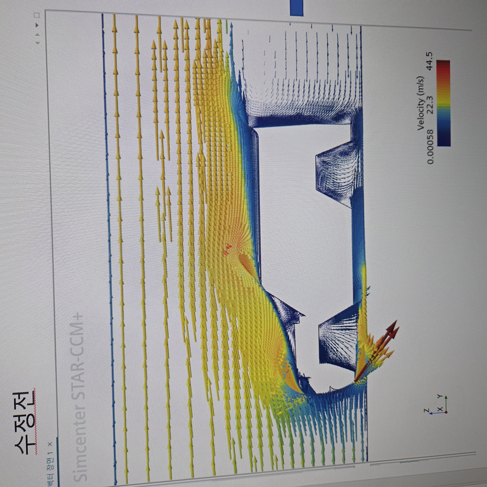

1. 의자 하중 및 변형 해석 (FEM 프로젝트)
설명: 하중 위치 변화에 따른 의자 다리 구조의 응력 및 변형 해석
- CATIA를 이용한 3D 모델링
- Abaqus 기반 80kg 하중 조건 정적 구조 해석 진행
[카티아 모델링 이미지]

기계공학 및 해석/시뮬레이션 전공

안녕하세요! 컴퓨터 응용 해석 및 시뮬레이션을 활용하여 문제를 해결하는 엔지니어입니다.
설명: 하중 위치 변화에 따른 의자 다리 구조의 응력 및 변형 해석
[카티아 모델링 이미지]

설명: 항력 계수($C_D$) 감소 및 박리 영역 개선을 위한 유동 해석
[유동 해석 시뮬레이션 사진]

설명: 자작차동아리 차량 부품 설계및 자작차 대회 진출
[차량 실제 주행 영상]